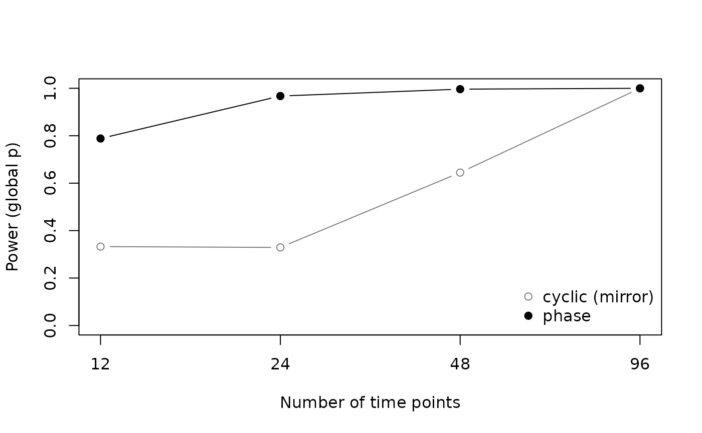

Choosing a permutation scheme
Source:vignettes/articles/permutation-schemes.Rmd
permutation-schemes.Rmdlagged_protest() offers three ways of building the null
distribution of the Procrustes statistic m²: phase-randomized
surrogates (permutation = "phase", the default), cyclic
shifts of the full series (permutation = "cyclic",
optionally with time reversal through mirror), and free
permutation of rows (permutation = "free"). This article
summarizes a simulation study of the three schemes and turns it into
practical advice. The main points are:
- free permutation should not be used with seasonal or autocorrelated series;
- the raw p-value at the optimal lag is liberal whatever the scheme,
so the global p-value (
fit$p.global) is the one to report; - for the global p-value, phase surrogates combine good calibration with high power, whereas cyclic shifts are calibrated but have low power;
- no scheme is calibrated when the seasonal period differs from the
series length unless the series is truncated to whole cycles (argument
period), and strong autocorrelation in short series makes all schemes somewhat liberal.
The simulation study
Series were generated with simulate_lagged_series() (see
Simulating lagged series for how it
works): seasonal sinusoids plus AR(1) noise, with Y either
independent of X (Type I error) or following X
with a known lag (power). Each of 983 scenarios was replicated 1000
times. The design crossed:
- series length: 12, 24, 48 and 96 time points;
- number of variables in
XandY: 2, 5 and 10; - AR(1) autocorrelation of the noise: 0, 0.3, 0.5, 0.7 and 0.9;
- relation between the seasonal period and the series length: one complete cycle (period = n), several complete annual cycles (period = 12 with n ≥ 24), an incomplete cycle (period = 0.75 n) and no seasonality (amplitude 0);
- scheme: phase (199 surrogates), cyclic with and without mirror, and free permutation (199 permutations, as a reference).
Lags 0–3 were scanned for n = 12 and 0–6 otherwise. The rejection rates below use α = 0.05; with 1000 replicates, a rate of 0.05 has a 95% binomial interval of about 0.037–0.064.
cal <- read.csv("calibration_v2.csv")
type1 <- subset(cal, block == "type1")
complete <- subset(type1, period_type != "mismatch")
power <- subset(cal, block == "power")
rate_table <- function(data, by, value) {
agg <- aggregate(data[[value]], data[c(by, "scheme")], mean)
wide <- reshape(agg, idvar = by, timevar = "scheme", direction = "wide")
names(wide) <- sub("^x\\.", "", names(wide))
wide <- wide[order(wide[[by]]), ]
rownames(wide) <- NULL
wide
}Free permutation
Standard PROTEST permutes rows freely, which assumes that time points are exchangeable (Jackson 1995; Peres-Neto and Jackson 2001). Two independent seasonal series violate this assumption, because both carry temporal structure that row permutation destroys (Legendre et al. 2002):
free <- subset(cal, block == "free")
aggregate(cbind(global = global) ~ n, data = free, FUN = mean)
#> n global
#> 1 12 0.9998
#> 2 24 1.0000
#> 3 48 1.0000
#> 4 96 1.0000The test rejects the null hypothesis in practically every replicate, so free permutation is kept in the package only as a reference.
Reporting the optimal lag
The usual way of reading a lag scan is to pick the lag with the smallest m² and report its p-value. That p-value ignores both the number of lags examined and the fact that the lag was chosen after looking at all of them. In series spanning complete cycles, it rejected the null far more often than α under every scheme (the zero for the cyclic scheme without mirror at n = 12 only reflects its 11 shifts, which cannot produce a p-value below 0.083):
knitr::kable(rate_table(complete, "n", "opt_sig"), digits = 3,
caption = "Type I error of the raw p-value at the optimal lag.")| n | cyclic | cyclic_mirror | phase |
|---|---|---|---|
| 12 | 0.000 | 0.200 | 0.220 |
| 24 | 0.279 | 0.278 | 0.292 |
| 48 | 0.255 | 0.248 | 0.258 |
| 96 | 0.221 | 0.239 | 0.222 |
The global p-value avoids this. It compares the observed minimum m² across lags with the minimum across lags under each permutation (a max-statistic test), so it is the p-value of the whole scan-and-select procedure.
Calibration of the global p-value
With series spanning complete cycles, the global p-value was close to the nominal level under all three schemes for weak to moderate autocorrelation:
knitr::kable(rate_table(complete, "autocorr", "global"), digits = 3,
caption = "Type I error of the global p-value by AR(1) autocorrelation.")| autocorr | cyclic | cyclic_mirror | phase |
|---|---|---|---|
| 0.0 | 0.035 | 0.043 | 0.047 |
| 0.3 | 0.036 | 0.045 | 0.049 |
| 0.5 | 0.041 | 0.049 | 0.053 |
| 0.7 | 0.048 | 0.060 | 0.063 |
| 0.9 | 0.081 | 0.100 | 0.129 |
Strong autocorrelation made all schemes liberal, most of all the phase scheme. The excess was concentrated in short series and in series with many variables, and faded with length:
strong <- subset(complete, autocorr >= 0.7)
knitr::kable(rate_table(strong, "n", "global"), digits = 3,
caption = "Type I error of the global p-value, AR(1) of 0.7 and 0.9.")| n | cyclic | cyclic_mirror | phase |
|---|---|---|---|
| 12 | 0.000 | 0.090 | 0.124 |
| 24 | 0.096 | 0.091 | 0.116 |
| 48 | 0.083 | 0.078 | 0.090 |
| 96 | 0.059 | 0.065 | 0.063 |
knitr::kable(rate_table(strong, "p", "global"), digits = 3,
caption = "Same, by number of variables.")| p | cyclic | cyclic_mirror | phase |
|---|---|---|---|
| 2 | 0.052 | 0.064 | 0.070 |
| 5 | 0.064 | 0.080 | 0.090 |
| 10 | 0.078 | 0.097 | 0.127 |
The cyclic scheme without mirror cannot reject at n = 12: its 11 shifts give a smallest attainable p-value of 1/12 = 0.083.
Power of the global p-value
The two schemes that respect the temporal structure differ sharply in
power. Shifting Y by s positions and then applying
lag k pairs the same rows as lag k + s
without a shift, so when several lags are scanned some cyclic
permutations reproduce the true alignment at another lag. The null
distribution of the minimum m² then contains the signal itself,
and the global p-value loses power. Phase surrogates are new series
rather than shifts of the observed one and do not have this problem
(Ebisuzaki 1997):
pw <- aggregate(global ~ n + scheme, data = power, FUN = mean)
pw <- reshape(pw, idvar = "n", timevar = "scheme", direction = "wide")
names(pw) <- sub("^global\\.", "", names(pw))
matplot(pw$n, pw[, c("cyclic_mirror", "phase")], type = "b", pch = c(1, 19),
lty = 1, col = c("grey50", "black"), log = "x", ylim = c(0, 1),
xaxt = "n", xlab = "Number of time points", ylab = "Power (global p)")
axis(1, at = pw$n)
legend("bottomright", c("cyclic (mirror)", "phase"), pch = c(1, 19),
col = c("grey50", "black"), bty = "n")
knitr::kable(pw, digits = 3)| n | cyclic_mirror | phase |
|---|---|---|
| 12 | 0.333 | 0.788 |
| 24 | 0.329 | 0.967 |
| 48 | 0.645 | 0.996 |
| 96 | 1.000 | 1.000 |
Both schemes recovered the true lag equally well, because the optimal lag does not depend on the null distribution:
aggregate(opt_true ~ n + scheme, data = power, FUN = mean)
#> n scheme opt_true
#> 1 12 cyclic_mirror 0.9636667
#> 2 24 cyclic_mirror 0.9890278
#> 3 48 cyclic_mirror 0.9990556
#> 4 96 cyclic_mirror 1.0000000
#> 5 12 phase 0.9639167
#> 6 24 phase 0.9893611
#> 7 48 phase 0.9993611
#> 8 96 phase 0.9999722When the period differs from the series length
Both the cyclic and the phase schemes treat the series as periodic with period n. When the series does not close a cycle, all schemes failed:
mismatch <- subset(type1, period_type == "mismatch")
knitr::kable(rate_table(mismatch, "n", "global"), digits = 3,
caption = "Type I error of the global p-value, period = 0.75 n.")| n | cyclic | cyclic_mirror | phase |
|---|---|---|---|
| 12 | 0.000 | 0.169 | 0.610 |
| 24 | 0.210 | 0.199 | 0.671 |
| 48 | 0.375 | 0.359 | 0.842 |
| 96 | 0.594 | 0.692 | 0.915 |
This failure is not specific to a scheme. Two series with the same seasonal period trace the same trajectory shape in multivariate space, and Procrustes rotation can superimpose them whatever the phase difference between them. Concordance between two series sharing a period therefore reflects their common periodicity unless the null model preserves it, which the cyclic shift does only when the period equals n (Kalyuzhny 2020).
The period argument handles this case by truncating both
series to whole cycles before the analysis, for example to the first 18
of 24 monthly samples of an 18-month cycle. We reran the scenarios above
with truncation (same series, 1000 replicates each), plus a power
block:
tr <- subset(cal, block == "type1_period")
knitr::kable(rate_table(tr, "autocorr", "global"), digits = 3,
caption = "Type I error of the global p-value, period = 0.75 n, after truncation to whole cycles.")| autocorr | cyclic | cyclic_mirror | phase |
|---|---|---|---|
| 0.0 | 0.018 | 0.030 | 0.044 |
| 0.3 | 0.018 | 0.032 | 0.049 |
| 0.5 | 0.020 | 0.039 | 0.050 |
| 0.7 | 0.025 | 0.044 | 0.067 |
| 0.9 | 0.043 | 0.071 | 0.136 |
pt <- subset(cal, block == "power_period")
knitr::kable(rate_table(pt, "n", "global"), digits = 3,
caption = "Power of the global p-value after truncation, by original series length.")| n | cyclic_mirror | phase |
|---|---|---|
| 12 | 0.000 | 0.385 |
| 24 | 0.163 | 0.898 |
| 48 | 0.468 | 0.991 |
| 96 | 0.999 | 1.000 |
Truncation brought the Type I error back to the level of series that already span complete cycles: calibrated up to AR(1) of 0.5, slightly liberal at 0.7 and liberal at 0.9 with the phase scheme. It costs data, and so power: a series of 12 time points with a period of 9 keeps only 9 rows, and power fell to about 0.39, against 0.79 for 12 rows spanning a complete cycle; the cyclic scheme cannot reject at all with 9 rows. It also requires the true period to be known.
Removing the seasonal component by harmonic regression with the known period was tested in a smaller simulation (300 replicates per scenario, phase scheme, n = 12–48) and is not offered: it reduced the Type I error to 0.08–0.13 with AR(1) of 0.3 and to 0.21–0.35 with 0.7, but did not calibrate the test, and it removes the seasonal signal that is often the object of the analysis.
Recommendations
- Use the default
permutation = "phase"with a largenperm(999 or more) and aseed, and reportfit$p.globalfor the optimal lag together with the lag profile. - Make sure the series spans whole cycles of any seasonal signal; if
it does not, give the length of the cycle in
period. - With short series (n ≤ 48) that are strongly
autocorrelated, report the cyclic result as a conservative check; with
mirror = FALSEit was the least liberal scheme in that range, at the cost of power. - Do not use
permutation = "free"for time series.